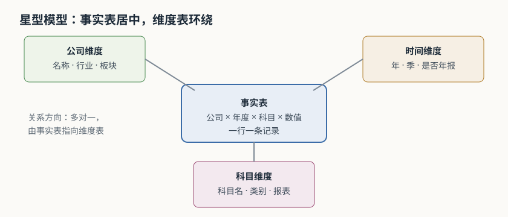
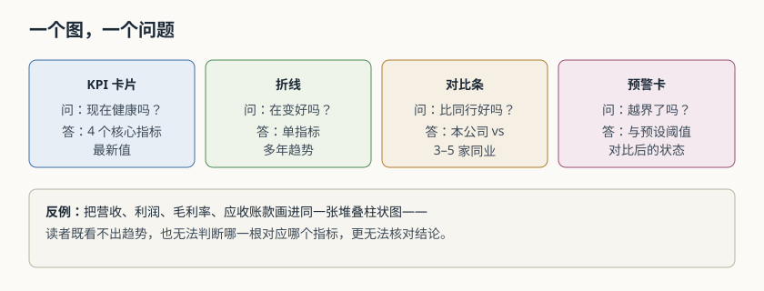

BI 看板：一个图回答一个问题
看板的价值不是把数据画得更漂亮，而是让人主动探索。但它也有一个代价：越漂亮，读者越容易低估错误的破坏力。
越漂亮，错得越贵
设想一个上线三个月、“一切正常”的财务看板：蓝色调、动态卡片、下钻顺畅。直到 CFO 随口问一句“毛利率环比为什么降了”，大家才发现仪表盘上的“毛利率”实际算的是另一个指标——分子被写错了，而此前没有一个人怀疑。看板越精美，读者越倾向于默认它是对的，这就是错误的破坏力被放大的地方。
所以本章的顺序是：先把数据模型搭对，再把每个指标的口径写成可复用的定义，最后才谈布局与预警。前两步错了，第三步做得再好看也没有意义。
一句话区分：BI 的目标是“让使用者能自己问问题”，而不只是“把结论画得更华丽”。前者要求模型与口径可复用，后者只要一张漂亮的图。
星型模型
看板的底层是一张数据模型。财务数据天然的形态是“事实表 + 维度表”：事实表每行是一条带数值的记录，维度表提供公司、时间、科目等属性。

为什么强调模型而不是直接画图？因为一旦模型关系错了，几百张图会一起错。先把“公司 / 时间 / 科目”三张维度表建好，后面的比率、同比、滚动值才能用同一套口径拼出来。
把口径写进度量值
看板上的每个数字都应该能回答“分子是什么、分母是什么、哪个期间、合并还是母公司”。把这件事固定成一条命名与定义规则，就不会出现“同名不同义”的卡片。
| 指标 | 分子 | 分母 | 必须声明的口径 |
|---|---|---|---|
| 毛利率 | 营业收入 − 营业成本 | 营业收入 | 成本是否含税金及附加；合并/母公司 |
| 资产负债率 | 负债合计 | 资产总计 | 同一时点；是否含少数股东权益 |
| ROE | 归母净利润 | 平均归母权益 | 期间利润 ÷ 平均权益；权益为负时不适用 |
| 周转率 | 营业收入（或成本） | 平均余额 | 分母是平均还是期末；期间天数统一 |
把上面每一行写成一个可复用的度量值（不重复写在每张图里），刷新数据时它们会一起重算。度量值的好处不是“看起来高级”，而是口径只能改一处。
工具的取舍。不同 BI 工具在部署方式、学习成本与数据源接入范围上差异很大，选型应以团队已有的技术栈与合规要求为准，而不是以图表样式为准。工具只是把口径落地的容器。
一个图回答一个问题
布局阶段最容易犯的错，是把多个问题塞进同一张图。下面的四个面板各回答一个具体问题，并把对比对象写清楚。

颜色要克制：整套看板只保留 2–3 种颜色，红色只用于预警，且必须同时有文字或图标，不能仅靠颜色编码结论。把“数据更新时间”和“上次核验日期”固定放在角标。
数据质量与实时监控边界
看板一旦上线，就会被当成“事实”。所以验证必须在前，而不是在上线后发现问题才补。
上线前把所有度量值与手工计算结果做一次全量核对，重点校对分子分母。
在看板角标标注数据更新时间与上次核验日期。
指定一名数据质量负责人，每月对关键指标随机抽样复算。
实时监控不等于实时信息。上市公司按季度披露，公开数据存在固定频率；所谓“实时刷新”刷新的是已公开数据的聚合结果，而不是提前获得未公开信息。用未公开信息交易属于内幕交易，是法律红线。
口径核对工作台
下面演示同一张数据表上“口径写错”会发生什么。数值为教学虚构，可手工复算：正确毛利率 (1000−600) ÷ 1000 = 40%；若分子误写成“营业收入”，得到 1000 ÷ 2000 = 50%。
修改数据，即时复算
两个结果都“能算出来”，差别只在分子定义；这正是看板最难被发现的一类错误。
清单与自测
先建星型模型（事实表 + 公司/时间/科目维度表），再画图。
每个指标写成可复用的度量值，并在名称里带上口径（如“毛利率_合并”）。
一个可视化只回答一个问题，对比对象写在标题里。
红色仅用于预警，并配文字或图标，不单靠颜色下结论。
角标标注数据更新时间与上次核验日期；上线前全量核对一次。
自测一：看板上的“毛利率”卡片数字在动，能否说明它算对了？
不能。“能算出数字”只说明公式能运行，不说明分子分母正确。必须把它的定义与手算基准对比一次。
自测二：“实时监控”能否让人在披露前获得更多财务信息？
不能。上市公司按季度披露，公开数据频率固定；实时刷新的只是已公开数据的聚合结果。用未公开信息交易属于内幕交易。
依据与边界
本页算例与图示数值均为教学虚构，不指向任何真实公司，也不推荐特定产品；不同 BI 工具的功能与许可证政策会变化，选型应以官方文档与团队合规要求为准。